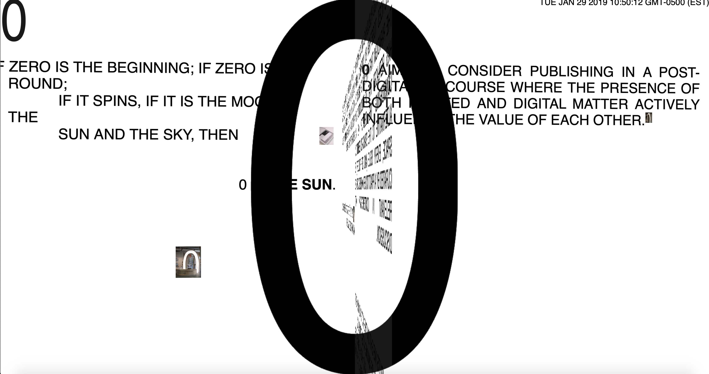
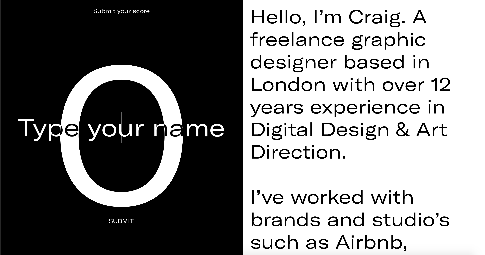
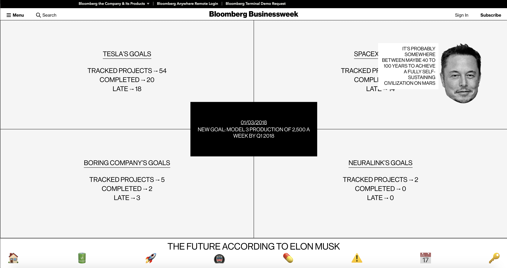

1

- This website rocks because of a scrolling interaction.
- Contents: Typography, images. The purpose is to download files/ zip folders. Spins as it scrolls. Black and white color except pictures.
- A multi-media archive. A digital/physical publication. School project.
- The navigation is clear as it involves us to scroll through it while the contents unfold. However, what’s not clear are the origins and the history of the website. Why archiving?
- The navigation does not change from page to page.
- It isn’t easy to navigate to the top as you have to scroll all the way back. No shortcut.
- We can’t choose where the website takes us. There is no menu.
- The visual representation isn’t related or doesn’t successfully portray the purpose.
2

- This website rocks because of a interactive game.
- Portfolio of a freelance graphic designer.
- Contents: His work. Animation and illustrative cursor. Black and White- inverted contents.
- Not clear. It’s jumbled. No scroll bar until you scroll. Doesn’t have a menu or instructions or any flow. Less visuals. Type is unnecessarily large.
- It’s a game but a tutorial or a “start” command for longer could be useful.
- It does change from page to page.
- The visual cue used was a countdown that led to the main page. However, it was too fast to understand.
- It is easy to return to the main page due to the “restart” button.
- The cursor is confusing. Serves no purpose? Change the cap to something else that makes it clear. Like a hand or a bat?
- He wanted to create an interactive website and show his ability to play with the website interaction.
3

- This website rocks because it conveys a clear idea.
- “Future according to Elon Musk” Goals and previous and potential projects by Tesla.
- Contents: Status of Tesla’s projects. Graphs and illustrative icons.
- Too much. Can get confusing. The main page is clear. The placing of the text as we hover over the icons is confusing. Serving the same functions so it’s monotonous.
- Clicking his head is a passageway to a calendar of his plans- interesting transition.
- Preview videos are helpful.
- However, showing the image first might be better than showing the text.
- Maybe a static image and hovering makes it moves with the text?
- The navigation is clear because of the icons and menu.
- Uses animation to change cue from interior page. Slides in as well as the background color changes.
- Easy to return back to the main page due to the home icon.
- The intention is to preview Tesla’s projects by interacting with the website. It is effective with the animation and the images. Interesting to look at and explore.